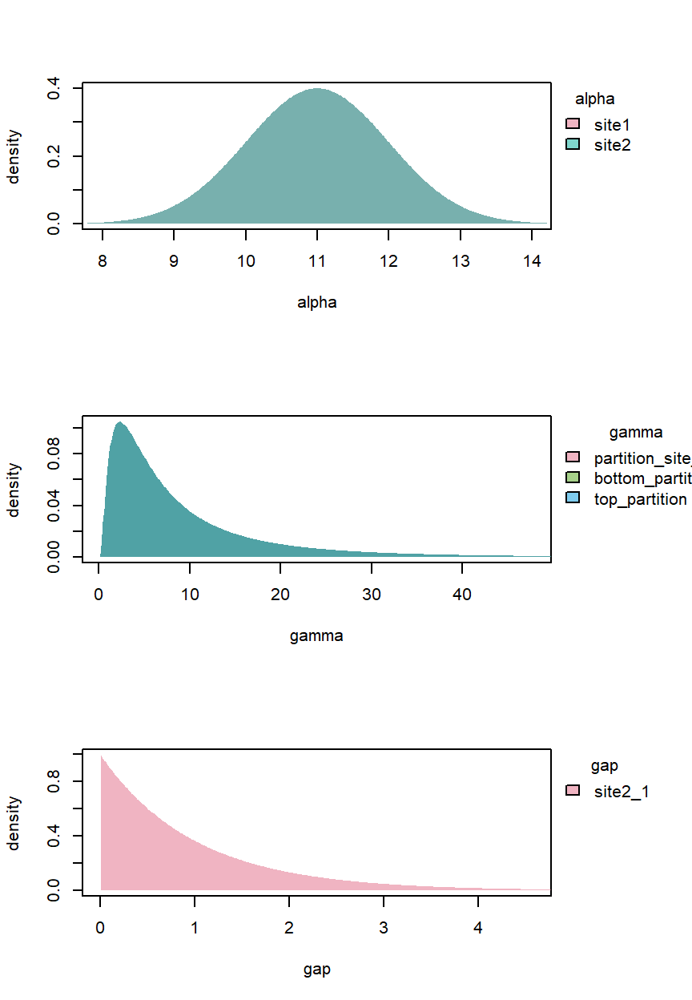
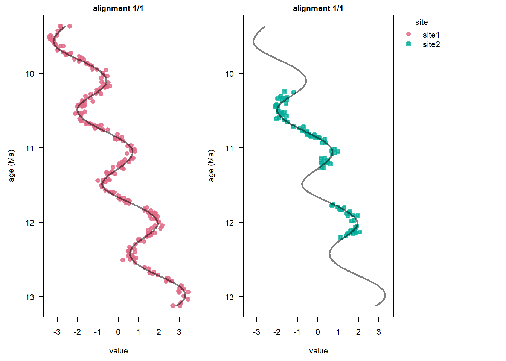
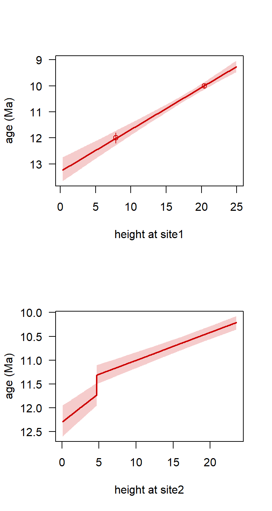

tiesData4 <- data.frame(site = c("site1", "site1"),
height = c(2.5 * pi, 6.5 * pi),
mean = c(12, 10),
sd = c(0.1, 0.05))Correlation on the age scale and age models
StratoBayes is an R package for correlating and dating geological data.
- Installation instructions and documentation: https://stratobayes.github.io/.
- Basic introduction to StratoBayes: StratoBayes vignette.
- Overview of available vignettes: Vignette index.
This guide introduces stratigraphic correlations on the age scale via absolute age constraints. Please send us an email or raise an issue on Github if you encounter any problems with the software or have suggestions on improving this documentation.
Absolute age constraints – radiometric dates, bioevents dated elsewhere, etc. – anchor the correlation in absolute time. In StratoBayes, absolute ages are treated like tie points, except that the correlation is carried out on the geological time axis, rather than a reference height scale.
Before you start: This vignette assumes you are familiar with
- Partitions.
- Tie points.
Absolute ages as tie points
We will specify ages in a ties dataframe for the dataset StratData4. Every row of the dataframe represents a tie point and needs a site and a height column. The mean and the standard deviation (sd) now correspond to the absolute age estimate of the horizon at the corresponding height and site.
Here, we specify two dated horizons for Site 1:
Age estimates are expressed as normal distributions with a mean and normal distribution.
Setting priors
Working on the absolute age scale forces us to specify model parameters (offsets, \(\alpha\); sedimentation rates, \(\gamma\); hiatuses, \(\delta\)) on the absolute age scale in Ma and m/Myr or similar. Sedimentation rate priors can no longer be specified relative to a reference site, and we need rough estimates of absolute sedimentation rates.
In our case, we can use the pair of dated horizons from Site 1 for an a priori sedimentation rate estimate:
sedRateSite1 <- diff(tiesData4$height[c(2,1)]) / diff(tiesData4$mean)
print(round(sedRateSite1, 2)) # display result
## [1] 6.28We use
\(\alpha\) (offsets) – We use a normal prior centred on the midpoint between the two dates for Site 1 (4.5\(\pi\)), and a deliberately broad standard deviation of 1 Myr to not “double-count” those ages. For site 2, in the absence of a better estimate, we simply use the mid point of the section and the same broad age uncertainty (specifying “middle” in the
alphaPositionargument).\(\gamma\) (sedimentation rates) – As we don’t have age estimates from Site 2, will use the log of this estimate as the mean of a normal distributed prior on ln\((\gamma) =\) 6.28 m/Myr on all partitions. To express considerable uncertainty, we set the standard deviation to 1 m/Myr. This implies a 95% prior probability interval ranging from 0.14 to 7 times the mean. Higher or lower values may be sensible in other scenarios, depending on prior expectations of sedimentation rate variability.
\(\delta\) (hiatus or “gap”) – An exponential prior concentrates probability near zero but has a long tail to account for the possibility of a longer gap. A rate of 1 Myr\(^{-1}\) gives a mean prior hiatus duration of 1 Myr and \(\approx\) 95% probability that the gap is < 3 Myr.
StratModelTemplate() lists the required priors, which we can then copy and fill in. Importantly, we have to set alignmentScale = "age" to confirm age scale alignment. As there is no reference site, we have to specify an \(\alpha\) prior for every site.
StratModelTemplate(stratData4b, alignmentScale = "age", sedModel = "partition",
alpha = "normal", alphaPosition = c(4.5 * pi, "middle"))We load the library and specify the priors:
library(StratoBayes)
stratPrior4b <- structure(list(
"alpha_site1" = NormalPrior(mean = 11, sd = 1),
"alpha_site2" = NormalPrior(mean = 11, sd = 1),
"gammaLog_partition site 1" = NormalPrior(mean = log(sedRateSite1), sd = 1),
"gammaLog_bottom partition" = NormalPrior(mean = log(sedRateSite1), sd = 1),
"gammaLog_top partition" = NormalPrior(mean = log(sedRateSite1), sd = 1),
"gap_site2_1" = ExponentialPrior(rate = 1)),
class = c("StratPrior", "list"))To verify that the priors depict our belief, it is useful to plot them. We can show \(\gamma\) rather than ln\((\gamma)\) by setting log = FALSE:
plot(stratPrior4b, log = FALSE)
The model run
The difficult work has been done. We can now set up and run the model by modifying the StratModelTemplate output:
stratModel4b <- StratModel(stratData = stratData4b,
priors = stratPrior4b,
alignmentScale = "age",
sedModel = "partition",
alphaPosition = c(14.1371669411541, "middle"),
nKnots = 15)
stratPosterior4b <- RunStratModel(stratObject = stratData4b,
stratModel = stratModel4b,
nRun = 3,
runParallel = TRUE,
nThin = 10,
nIter = 1000) # user higher nIter for more accurate resultsResults
After we have assessed the performance of the MCMC with a TracePlot(), we can verify that the data has been correctly aligned on the age scale:
plot(stratPosterior4b, ylab = "age (Ma)")
The StratMapPlot function allows us to visualise the stratigraphic mapping (age-depth model) for each site:
StratMapPlot(stratPosterior4b, sites = c(1,2))
To get an age estimate with uncertainty at individual horizons, we can use StratMap():
StratMap(stratPosterior4b, heights = c(0.5 * pi, 4.5 * pi), site = 1)
## height mean sd 2.5% 50% 97.5%
## 1 1.570796 13.03880 0.22837078 12.58317 13.03865 13.43674
## 2 14.137167 11.00879 0.08533684 10.84382 11.01295 11.17668We can see that age estimates at the bottom of Site 1 have larger uncertainties than age estimates in the middle, where they are surrounded by two absolute ages.
Next steps
- See Partitioning data for a refresher on how sedimentation rate changes and/or hiatuses enable more accurate correlations
- Tie points introduces the use of tie points from scratch